Отечественная философия
Обращение к отечественной философии, ее историческому и содержательному своеобразию, с неизбежностью поднимает проблему любого историко-философского повествования: насколько оригинальна русская философия? Не является ли она всего лишь поздней, безусловно, талантливой попыткой просветительской адаптации и популяризации академически-классической западной традиции философствования, открывшей миру периферийные размышления о русской самобытности, обсуждение новых / старых (вечных) вопросов философии в нестрогих формах беллетристики, полемики, проповедничества и морального поучения? Поиск ответа на эти вопросы позволяет приблизиться к пониманию не только русской философии, но и в целом русской культуры, менталитета, духовности, «русской идеи».
Начало становления отечественной философии – X-XI вв., когда в Киевской Руси разворачивается процесс христианизации (памятная дата – крещение Руси в 988 г.). Этот этап – вплоть до XVII в. – называют по- разному: философия Древней Руси и Московского царства, средневековая русская философия, философия допетровского периода. Философствование этого периода перекликается со средневековым теоцентризмом западноевропейской патристики, а центрами духовных поисков в это время становятся православные монастыри. Ранняя русская философия не имеет самостоятельного статуса, она вплетена в сеть религиозной догматики и формирующейся православной этики.
Рассуждая о философии, следует помнить, что содержание и глубина философствования не зависят от исторической даты появления: его значимость определяется смысловой наполненностью собственного времени. Историческое время русской философии невозможно удлинить, она появляется значительно позже философии Древней Греции, Древних Китая и Индии. Однако в древней и средневековой Руси философское миропонимание как определенная картина бытия человека и мира всегда играла значительную роль. Эта роль, безусловно, была менее существенной по сравнению с европейской культурой античности и средневековья и принципиально другой, совпадая в большей мере с судьбами собственного народа и страны.
Очевидно, что в своих истоках русская философия связана с мировой философской традицией, однако ей присущи самобытные характеристики. С одной стороны, в своем генезисе она наследует образность языческого мироощущения и стилистику древнеславянской культуры, с другой же, приняв православное христианство, у/осваивает, благодаря тесным узам с Византией, множество идей и концептов классической античной философии, многие положения восточно-христианской богословской и философской мысли.
Таким образом, возникновение русской философии происходит не в изоляции от господствующих линий развития мировой философии. Она пропитана идеями античной (греческо-латинской и восточно- византийской), древнеболгарской мысли, только в православно- христианизированном виде. Философские вопросы первоначально ставились и обсуждались в формах проповеди, исторического летописания, нравственного поучения, литературно-художественного сказания («Слово о Законе и Благодати» митрополита Илариона, «Поучение» князя Владимира Мономаха, «Моление Даниила Заточника»).
Философия понимается как священная мудрость, обращающая человека к постоянному поиску высших смыслов жизни и наставляющая на следование духовно-практическим православным добродетелям. В процессе скрупулезного истолковывания библейских и других священных текстов (экзегеза) в русском самосознании формируются абстрактные категории, главная из которых – всеобъемлющее представление о Боге как высшем единстве духовно-нравственного, природного, социального и пр.миров.
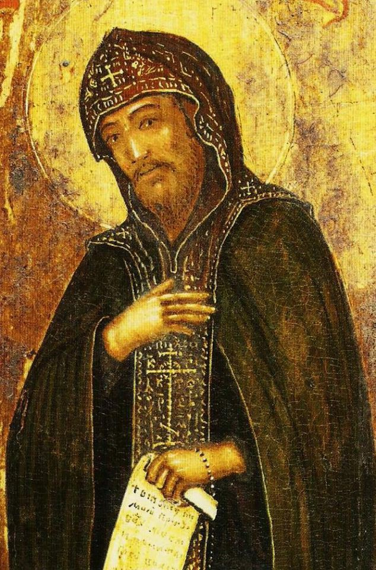 Существенное место в средневековой русской философии занимает Нил Сорский (конец XV века), последователь раннехристианской отшельнической школы исихазма, утверждающей необходимость внутренней духовной концентрации с помощью медитативных практик. Преподобный Нил настаивал на «внутренней молитве» и «трезвлении сердца», которые проявляются в строжайшей духовной дисциплине, очищении сознания от страстей и помыслов зла. Центральным событием в религиозно-философской жизни Московского царства стал спор нестяжателей и иосифлян. Позиция нестяжательства была выражена Нилом Сорским и другими заволжскими старцами и состояла в отказе от материальных и властных притязаний, в проповеди подвижничества и «умного делания».
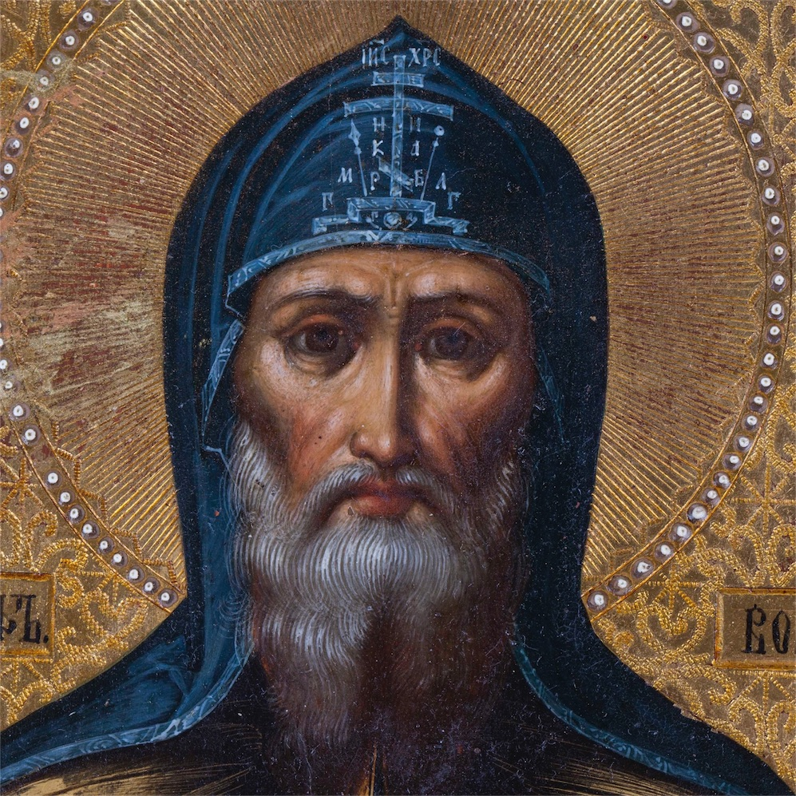 Противоположной точки зрения придерживался Иосиф Волоцкий (Волоколамский), идеолог становящейся в XV - XVI вв. московской самодержавной государственности. Будучи сторонником идеи «социального призвания и служения Церкви», он обосновывал и сакральное значение царской власти, призывал к жесткой и непримиримой борьбе с еретиками и ересями. Развиваемая иосифлянством идеология православной государственности нашла свое выражение в концепции «Москвы – третьего Рима» (старец Филофей): как прежний Рим был сменѐн православным Константинополем (Византия), так после его падения историческая миссия «православного царства» переходит к русскому государству, «а четвертому царству не быти», - заключает Филофей.
Таким образом, первый этап развития отечественной философии (X- XVII вв.) явился осмыслением православной духовности и опытом становления самосознания личности в обстоятельствах жизни русского этноса. Об этом же свидетельствует появившийся в повседневном массовом сознании культ книжников, образованных людей, а также святых и юродивых.
Ожесточенная борьба с ересями в XV-XVI веках, противостояние протопопа Аввакума (старообрядчество) реформам патриарха Никона, приведшее к расколу русской православной церкви в XVII в., последующий «поворот к Европе» и существенное изменение всего национального уклада в XVIII веке носили не только и не столько военно-политический или хозяйственно-технический, сколько духовно- идеологический характер. Уже с конца XVII века разгорается спор «новаторов» и «традиционалистов», в ходе которого исходные гуманистические позиции русской философии укрепляются.
Следующий период развития отечественной философии начинается в XVIII веке. Он совпадает логически и исторически с переходом к Руси Петровской от Руси Московской. Реформы Петра Первого призваны были европеизировать Россию и, соответственно, секуляризировать общественную жизнь. Это грандиозное преобразование затронуло все сферы жизни российского социума, всю духовную культуру того времени, в том числе и философию. Именно в XVIII-XIX веках философия становится отдельной профессией, выделяется как особая среда духовной деятельности; в этот период русская философия испытывает значительное влияние западной философии, осваивает ее опыт аналитики модернизации и Просвещения.
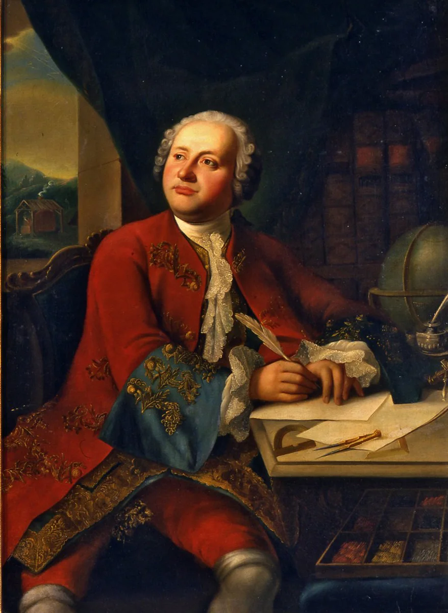 Михаил Васильевич Ломоносов (1711 – 1765), основоположник новой светской российской культуры, будучи интересным, глубоким мыслителем, крупным ученым-естествоиспытателем, заложил основы материалистической традиции в русской философии. Им была создана теория «корпускулярной философии», в основе которой лежат идеи атомизма и эмпиризма. Формулируя знаменитый закон сохранения движения и материи, он отвергает мистическое понимание природы, утверждает научное познание и культурное творчество как служение и долг, которые основаны на высоком моральном и религиозном вдохновении. В эту эпоху формулируется специфически-значимая для отечественной философии проблема русского самосознания (А.Н. Радищев), места и роли России в мире (П.Я. Чаадаев, положивший одним из первых начало самостоятельного российского философского творчества).
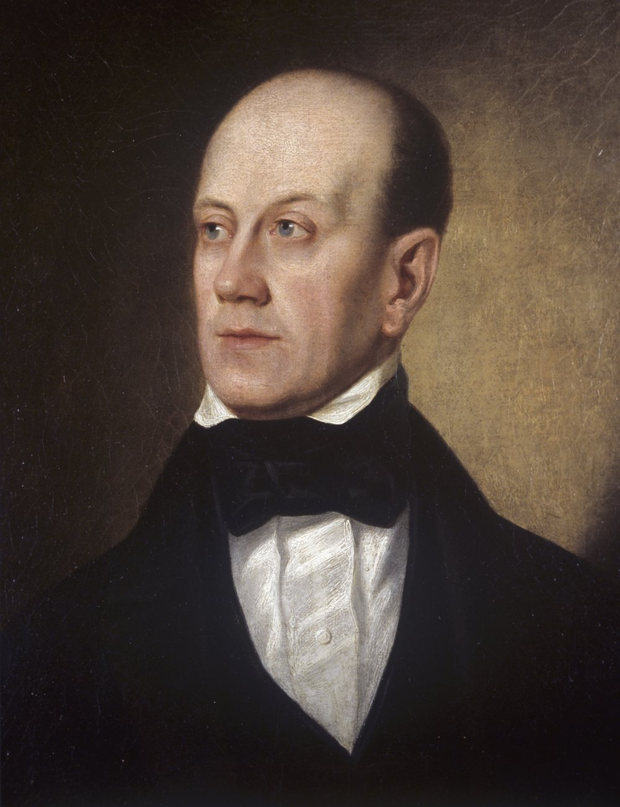 Философская концепция Петра Яковлевича Чаадаева (1794 – 1856) изложена в знаменитых восьми «философических письмах», лишь одно из которых было напечатано при жизни автора (1836). Чаадаев первым в истории русской философии объединил вопросы смысла культуры, истории, сознания в общую проблему человеческого бытия, устроенного иерархически. Самый низший уровень – природный, он является объектом человеческой деятельности и восприятий. На следующем уровне находится индивидуальное сознание, выше него – всеобщее надындивидуальное знание, которое, в свою очередь, является эманацией / «истечением» вершины бытия – Бога. Человек устремлен к Богу, но этот путь – не индивидуалистическое и аскетическое самосовершенствование, а, наоборот, «растворение» человека в Боге через «снятие» индивидуализма и обретение высшей социальности как «безличности». История человечества для Чаадаева не является для индивида чуждой и внешней, она и есть суть человеческого, разворачивающаяся в пространстве и во времени, в постоянном диалоге «Я» и «Другого». Символом предела положительного человеческого развития и существования основоположник отечественного западничества считает Европу.
Основание Академии наук (XVIII в.), а позже Московского, Петербургского и Казанского университетов (нач. XIX в.) способствуют выходу философии в новую для нее, научно-образовательную сферу.
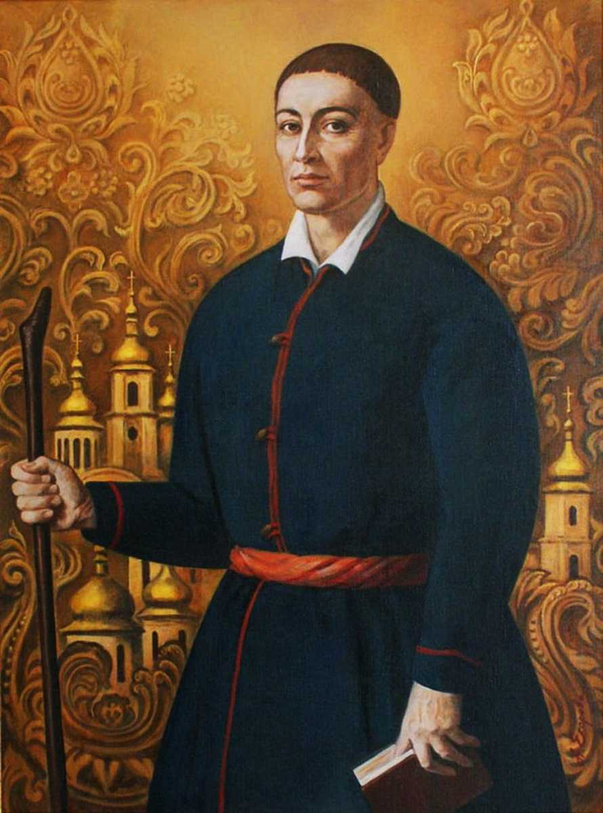 Оригинальный мыслитель того времени, философ и богослов Григорий Саввич Сковорода (1722-1794), казалось бы, стоит вне общественных преобразований. Странствуя, ведя аскетический образ жизни, он выражал в философских и поэтических произведениях идеи мироотречения, отчуждения от суетности и поверхностности обыденной жизни и утверждения подлинной реальности тайных «следов Божиих» в мире, открываемых познанием себя и Бога. Его антропоцентризм и мистический пантеизм восходят, с одной стороны, к традициям древнерусской мысли, а, с другой, идейно сближаются с общеевропейскими духовными исканиями эпохи Возрождения и Нового времени. Знаменитая эпитафия, написанная самим Сковородой для своей могилы, гласит: «Мир ловил меня, но не поймал».
Хотя в это время отмечаются различные подходы к решению отдельных исторических и социально-политических, антропологических и религиозно-этических вопросов, в целом для русской философии XVIII- XIX вв. характерно определенное созвучие и единство идей в рассмотрении состояния и дальнейших перспектив отечественной жизни.
К середине XIX – началу XX в. (до 1917 г.) формируется оригинальная русская философия как самостоятельная сфера интеллектуальной деятельности, она содержит несколько направлений, которые отличаются своеобразием концепций и идей. Как писал Н. А. Бердяев, складывается школа русской философии с оригинальной национальной физиономией.
В этот период в духовной истории России особое место занимает спор славянофилов и западников, дискутирующих о путях развития родины. Славянофильство как духовное течение подчеркивает неповторимость и уникальность российского национального религиозно-культурного опыта, его самобытность, выступая за отказ от «ученичества» и у Запада, и у Востока (И.С. и К.С. Аксаковы, А.С. Хомяков, И.В. Киреевский) и обосновывая особую историческую миссию славян, призванных дать миру новые этические, религиозные и экономические ориентиры. Славянофилы создают учение о целостном духе, о соборном сознании, объединенном любовью. Соборность, по их мнению, выступает метафизическим принципом бытия, который объединяет православный народ и церковь с помощью воли и любви и позволяет жить в мире и познавать мир на основе внутренних духовных устремлений в противостоянии рациональной выгоде материальных интересов. Идея соборности выражает специфику православия, представлявшегося славянофилам органическим единством верующих, в котором у каждого человека есть свобода личных убеждений и свой путь в обретении Бога (Хомяков). Западничество как ориентация духовных поисков в России состояло в резкой критике отсталых патриархальных порядков, высказывалось о цивилизационном единстве Европы и России, о необходимости общего прогрессивного развития на основе усвоения ценностей, выработанных западноевропейской культурой (П. Я. Чаадаев, Д. И. Писарев, А. И. Герцен). Эти ценности не противоречат основам национальной и православной культуры, они являются универсальными общечеловеческими началами жизни просвещенного социума: одновременная любовь к себе и своей культуре, уважение к другим (и их «чужой» культуре), признание частной собственности, личной свободы каждого, опора на здравый смысл и разум, умение жить лояльно и легально (Чаадаев).
Религиозная философия была самым влиятельным направлением в отечественной философии конца XIX – начала XX в. (Владимир Сергеевич Соловьев, Николай Александрович Бердяев, Василий Васильевич Розанов, Павел Александрович Флоренский, Иван Александрович Ильин).
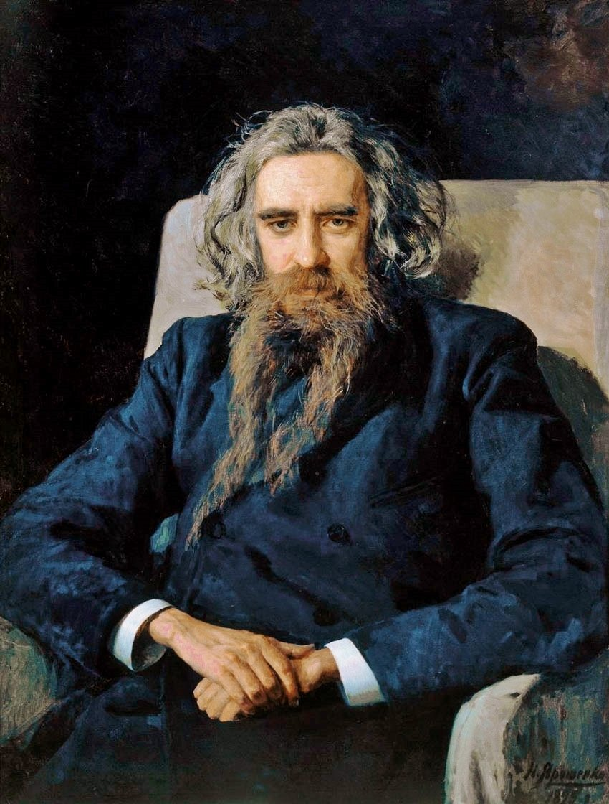 Владимир Сергеевич Соловьев (1853 – 1900) создает оригинальную философскую систему, по праву являясь центральной фигурой русской религиозной философии. Основные его работы – «Исторические дела философии», «Чтения о богочеловечестве», «Смысл любви». В своей философии всеединства Соловьев утверждает идеальный строй мира, органическую целостность и гармонию бытия, всех его частей и элементов, распадение этого единства ведет к гибели мира. Живым осуществлением Всеединства является истинная суть «нового духовного человека», который вдохновлен примером Христа. В философской системе мыслителя главное место отводится рассмотрению проблемы человеческой природы, социальной философии и философии истории, философии религии (философской теологии). Важная мысль его учения – идея о Богочеловечестве как высшем достижении единства материального, идеального и божественного. Богосовершенство надо искать в «свободно- разумной личности» человека, а не в окружающем мире; долгом человечества является необходимость стать Богочеловечеством. Окончательными и главными условиями такой всечеловечности являются совершенный человек Христос, свобода, гарант которой – Бог и «бесконечность человеческой души». В концепции Соловьева метафизическим синтезом идей Всеединства и Богочеловечества является теургия - мистическое восхождение к Богу (Первоединому). «Цельное знание», возможное как результат универсального синтеза религии, философии и науки, и «цельное творчество» образуют «цельную жизнь». В магии любви, в эстетическом творчестве приобщения к высшему миру благодаря внутренней свободе действования достигается Софийная мудрость.
Русский православный народ должен войти в совместную христианскую жизнь мира и реализовывать «всечеловеческое» единство в согласии со всеми народами, «снимая» все противоречия между Востоком и Западом. В. С. Соловьев до конца своих дней проповедывал идеи «христианской политики», «вселенской культуры», неразрывности и единства исторического процесса, завершающего себя в Богочеловечестве. Образ богочеловеческой культуры теократизируется философом, обретая черты «нового средневековья», наступление которого будет промыслено его почитателем и продолжателем идей Н. Бердяевым.
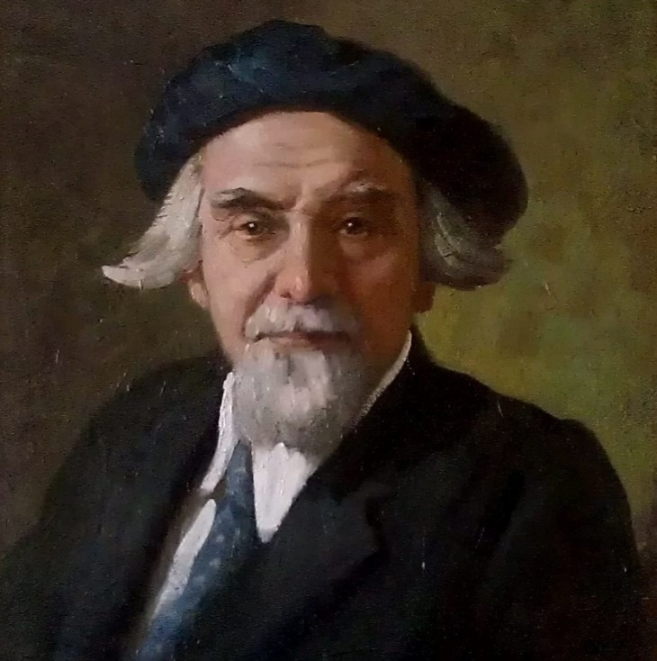 Николай Александрович Бердяев (1874 – 1948) в своих ключевых произведениях «Философия свободы», «Смысл творчества», «Русская идея» разрабатывал идею антроподицеи, творческого откровения человека. Бог у Бердяева – удачное именование триединства красоты, истины и добра, главной интуиции античности; это высшая ценность, Тайна, приоткрывающаяся в каждом свободном акте человека. Он считал, что, как человек ждет божественного откровения, так и Бог ожидает откровения человеческого. Творчество – вот ответ человека Богу: только в творчестве человек уподобляется Богу и оправдывает этим свое существование. Человек продолжает дело, начатое божественным творением: он создает города, идеи, предметы искусства, формы социальной жизни, технические объекты и т. д. Бог для религиозного философа Бердяева – философема, абсолютная трансценденция, которая сообщает человеку в резонирующем слиянии смысл его бытия. Теология Бердяева носит гуманистический характер, в ней утверждаются принципы пронизанности тварного мира творческим и духовным началом, достоинства человека и постоянного расширения его свободы.
Многие прозрения Л.Н. Толстого, Ф.М. Достоевского, В.С. Соловьева были ясно развернуты в экзистенциальной, антропологической философии Бердяева, утверждавшего первичность, существования над сущностью (экзистенции над эссенцией), свободы над необходимостью, духа над материей. Н.А. Бердяев полагает человеческую личность не социально- этическим индивидом, а индивидом космическим, который в напряженном, интенсивном бытии по сути выбирает для себя «качество жизни» вместо «количества жизни». Человек «обречен» жить в обществе, управляемом необходимостью (объективными законами), поэтому, с точки зрения Бердяева, неизбежен и естествен конфликт социума и творческой личности («так было, есть и будет»).
Н. А. Бердяев исследует историю гуманистических идей философии и религии. Христианство, поставившее проблему свободы как творчества добра или зла, было многими интерпретировано как религиозное обоснование необходимости. Позже философия проблематизировала вопрос о вере человека в собственные силы, которые не ограничены никакой высшей силой. Как итог – появление в человеческом бытии «ложных точек значимости», когда технические и природные средства и основания превращаются в цели (к примеру, государство, индустрия, информация и др.). Следствием мировоззренческих сдвигов становятся дегуманизация и отчуждение, человека, безмерная власть государственных и социальных структур над личностью, ее духовное одиночество в массовых движениях и практиках. Русская нация, уверяет Н.А. Бердяев, соблазнившись рационализмом и атеизмом западных учений, включая марксизм, стоит перед необходимостью отстоять гуманизм в этом последнем бесчеловечном испытании и содействовать органическому и свободному объединению рационалистического (западного) и религиозного (восточного) начал всеобщей мировой истории.
Философия русского космизма зарождается в конце XIX века, продолжая стремление всей русской философии к построению предельно широкого гуманистического видения универсума и опираясь на новейшие открытия и достижения естествознания (Н.Ф. Федоров, В.С. Соловьев, К.Э Циолковский, В.И. Вернадский). В произведениях ученых и философов этого направления разрабатываются идеи о единстве космоса и человека, о космопланетарной природе человека, о космических масштабах его деятельности.
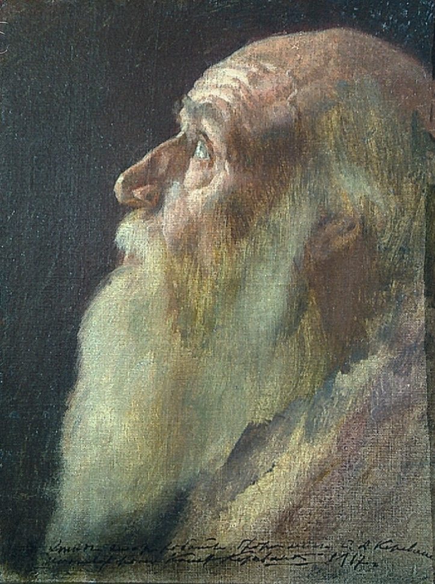 Одна ветвь русского космизма представлена философскими построениями, опирающимися на научно-фантастические либо теологические прозрения. Для Николая Федоровича Федорова (1829- 1903), автора «Философии общего дела», главным отправным пунктом теоретизирования была мысль о том, что подлинным поприщем деятельности человечества является все мироздание, а Земля – лишь начальное место объединения людей, в труде и познании покоряющих пространство и время. Научившись регулировать природные процессы, человечество обретет бессмертие и воскресит поколения предков. Философия всеединства В.С. Соловьева разворачивает замысел о высшем эволюционном прорыве одухотворенного человечества, становящегося сотворцом Бога (Богочеловечество) и перевоплощающего универсум, избавляя его от распада и гибели, обеспечивая многообразие и полноту жизни.
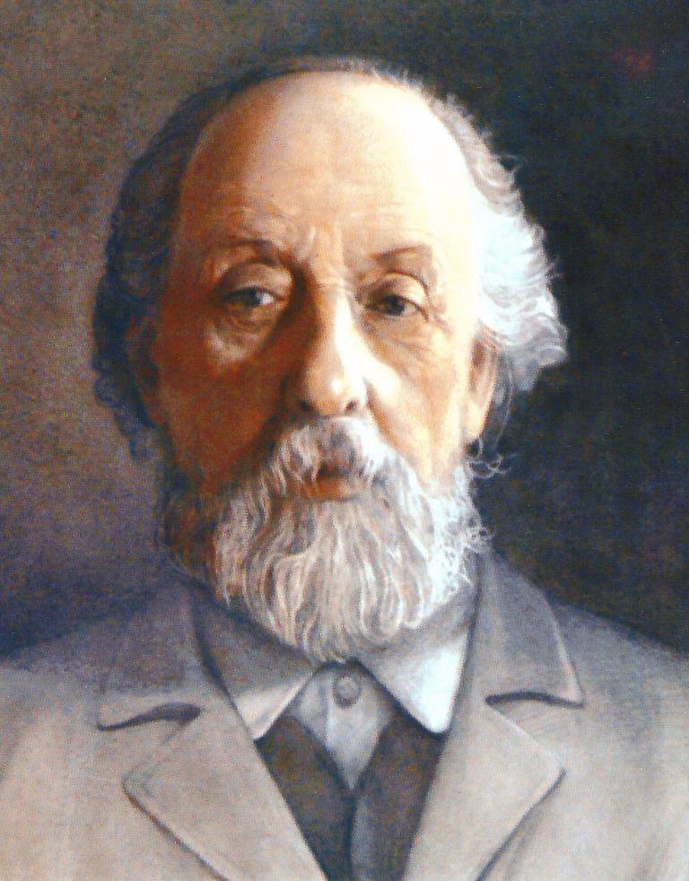 Другая ветвь русского космизма тесно связана с естественнонаучным эволюционизмом и представлена учеными-естествоиспытателями. Константин Эдуардович Циолковский (1857-1935) разработал «космическую философию», техническим приложением к которой были его научные проекты, положившие начало современной космонавтики. Космос наполнен жизнью различных модификаций, от примитивнейших до бессмертно-лучезарных, и человеком эволюция не завершается. Он был уверен, что благодаря творческим интенциям разума люди выйдут в космическое пространство, изменив свою физическую природу и приблизившись к высшим организмам. Ученик и друг Циолковского, знаменитый биофизик А.Л. Чижевский показал связь социальных и биологических процессов на Земле с космическими процессами (например, с активностью Солнца). Им были выявлены двенадцатилетние циклы происходящих в русской истории значительных, драматически окрашенных событий (1905, 1917, 1929 и т.д. гг.).
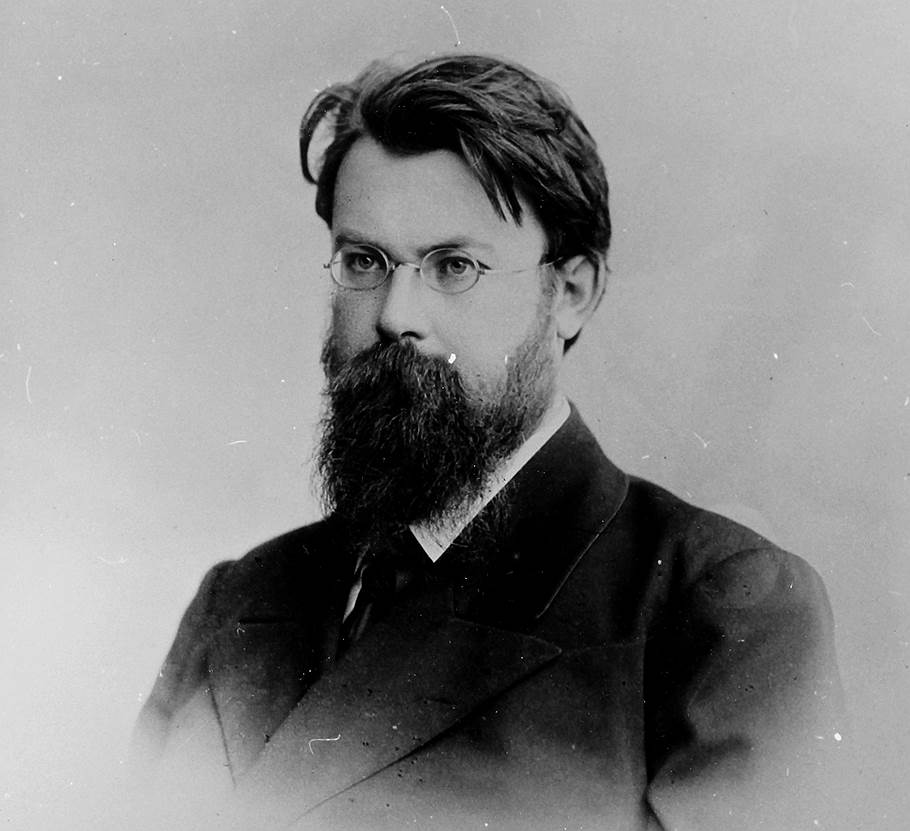 Наиболее полное воплощение учение русского космизма получило в трудах Владимира Ивановича Вернадского (1863-1945), выдающегося отечественного ученого, мыслителя и общественного деятеля. Он установил особую роль биосферы в формировании вещества Земли и космоса, создал учение о ноосфере, каковой становится биосфера, управляемая разумом в интересах всего человечества.
Веря в безграничные возможности прогресса, все русские космисты подчеркивали его общечеловеческий (всеединый) и гуманистический (нравственно совершенный) характер.
Русский марксизм быстро стал популярен в России в конце XIX – начале XX вв., поскольку материалистические и социал-демократические идеи были распространены среди отечественных представителей духовной культуры (Н. А. Добролюбов, Д. И. Писарев, А.И.Герцен, Н.Г. Чернышевский).
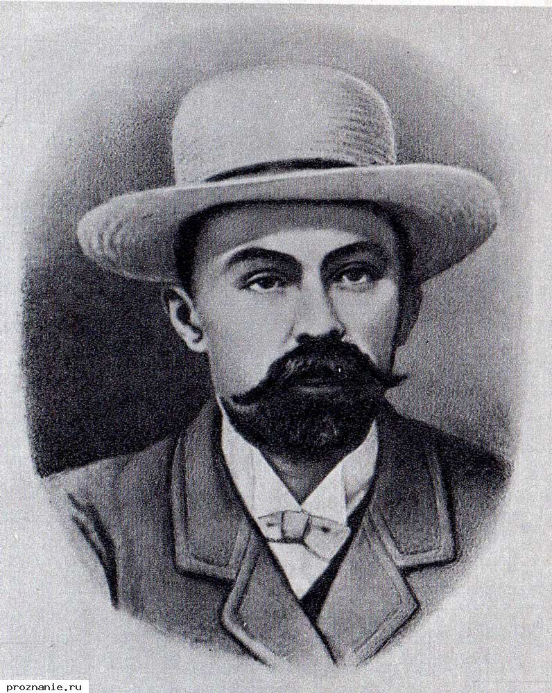 Основоположником теоретической марксистской традиции выступил Георгий Валентинович Плеханов (1856-1918), популяризируя классические идеи К. Маркса и Ф. Энгельса и отстаивая материалистический монизм в понимании истории.
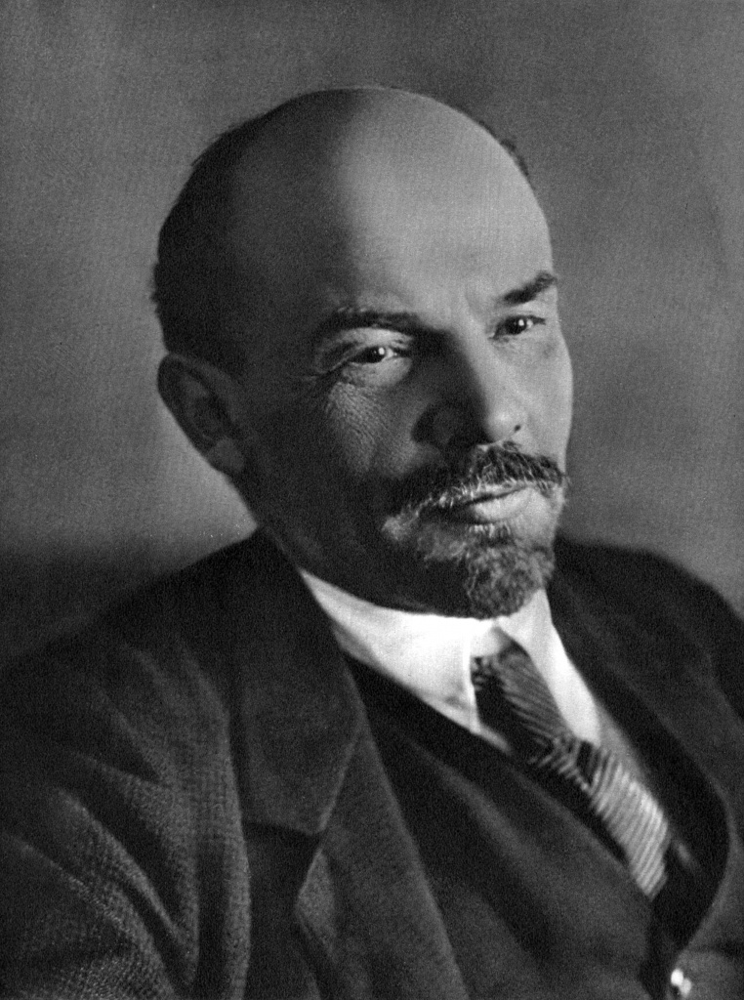 Позже Владимир Ильич Ленин (1870-1924), создатель партии большевиков и советского государства, строит свою политическую и экономическую программу на основе модернизированной марксистской теории. В труде «Материализм и эмпириокритицизм» (1909) он критикует субъективный идеализм Э.Маха и Р.Авенариуса и их русских последователей, возникший вследствие революционных открытий в естествознании и попыток их осмысления. Он считает, что новый диалектический материализм адекватен новой науке: познание понимается как процесс отражения человеком объективной реальности, как бесконечное приближение к истине и отказ от любых абсолютов и пределов знаний. Ленин настаивает на необходимости овладевать диалектикой как культурой мышления, которая оберегает от догматики, односторонности, упрощения и ориентирует на поиск изменений, противоречий в действительности. Данное им философское определение материи и в наши дни служит мировоззренческой основой научной картины мира. Многие идеи Маркса и Ленина в советской России были развиты, а в большей мере догматизированы (печально известный «марксизм-ленинизм»).
В 1917 г., после революционного слома отечественной жизни, русская философия переживает разделение на русскую философию зарубежья и советскую философию. Одни философы, прежде всего религиозные мистики, были насильственно высланы (в истории России известен феномен так называемых «философских пароходов» 1922 г.), другие уехали сами, третьи были репрессированы. Оказавшись в эмиграции, русские философы в основном продолжали развивать свои идеи (Н.О. Лосский – интуитивизм, Н.А. Бердяев – персонализм, П.А. Сорокин – социальную теорию). Заметим, что почти все они, несмотря на социально-политические изменения, начинающийся идеологический пресс, ухудшение материально-бытовой обустроенности и т.п., не хотели расставаться с родиной и расценивали вынужденный отъезд из России как личную трагедию.
В СССР идеологически и доктринально доминировала философия марксизма – диалектический и исторический материализм. Развитие иных философских воззрений и их публичное декларирование приводило к лишению права работы и/или аресту. Такие условия отнюдь не способствовали развитию философии как свободной мыследеятельности. Как результат – 70 лет относительного «застоя» советской философской мысли, в которой преобладал идеологический официоз, но были и теоретические размышления высокого класса специалистов. В среде советских философов многие смогли выражать и отстаивать свои взгляды, несмотря на множество препятствий,– А.Ф. Лосев, М.М. Бахтин, В.Ф. Асмус, С.С. Аверинцев, Э.В. Ильенков, М.К. Мамардашвили, – создавая идейно-философские предпосылки демократического поворота конца ХХ века.
С 1990-х гг. социально-политическая ситуация в России значительно меняется, и отечественная философия выходит из скорлупы советскости, начиная новый этап своего бытования. Она по-новому открывает для себя достижения новейшей мировой философской культуры, заново обращается к своим глубоким национальным философско-культурным основам. Одна из главных задач – это восстановление прерванных традиций русского философствования и самостояния современной русской философии.
Итоги
В заключение остановимся на выделении специфических черт отечественной философии. Русская философия становится собственно философией как особой и самостоятельной формой общественного сознания тогда, когда она подключается к мировой традиции поиска универсальных истин, свободных от культурно-исторических условий. Следует заметить, что преувеличенное внимание к уникальности русской философии чревато утверждением «особого пути» русской философии, противопоставлением отечественной философии (обозначаемой «философией прозрения и страдания», «живым христианством») традициям западноевропейской рациональной рефлексии. Такой путь заводит в дебри болезненной исключительности и отрывает русское философствование от универсального опыта человеческой интеллектуальной духовной активности. Это предостережение надо иметь в виду при рассмотрении действительно складывающихся в специфических историко-культурных обстоятельствах особенностей философского вопрошания, содержания и формы тематизации, стилистической и методологической направленности отечественной философии.
- Основная черта русской философии, за редким исключением, – ее религиозный, православный характер. Эта особенность осознавалась практически всеми русскими философами и историками философии. «Главная задача философии, – отмечает Н. О. Лосский, – заключается в том, чтобы разработать теорию о мире, как едином целом, которая бы опиралась на все многообразие опыта. Религиозный опыт дает нам наиболее важные данные для решения этой задачи. Только благодаря ему мы можем придать нашему миросозерцанию окончательную завершенность и раскрыть сокровеннейший смысл вселенского существования. Философия, принимающая во внимание этот опыт, неизбежно становится религиозной». Русская философская мысль со времени своего зарождения в средневековой духовной культуре Руси осваивала религиозно-практический опыт эпохи средствами и формами философствования, она не была ограничена официальной теологией православного христианства, а старалась выявлять его сокрытый смысл. Часто оригинальные религиозные идеи русских мыслителей входили в противоречие с официальной позицией фундаментального православия (например, Л.Н. Толстой даже был отлучен от церкви).
- Важнейшей особенностью русской философии является ее антропологизм в сочетании с ориентацией на вселенско-божественное и соборное начало человека. Русские философы решение проблем Бога, природы, общества и человека рассматривают в органическом единстве с человеческим познанием, историей, жизнью и судьбой. Собственно вопросы теории познания и научной методологии, аргументации и логики, структуры природы и общества рассматриваются большинством мыслителей лишь в той мере, в какой они вплетены в целостную ткань существования человека.
- Еще одна специфическая характеристика русской философии состоит в том, что со своих первых шагов, усваивая развитые формы византийской мысли, а затем и западноевропейского философствования, она создает свой особый язык категорий, метафор и образов, аутентичные способы, методы и стилистику философской рефлексии. Человечески понятная глубина и обаяние, исходящие из сочинений русских мыслителей, неразрывны с органической цельностью философской мысли, которая обусловлена историко-социальными обстоятельствами национальной жизни, принципами и традициями человеческого жизненного самоопределения. В этом коренятся истоки подлинных смыслов «русского философского дела».
- Другая отличительная черта русской философии – это критическое отношение к идеям классического западного рационализма, к его притязаниям на абсолютное первенство в организации индивидуальной и социальной жизни. Российское философствование ориентировано на исследование конкретного нравственно-религиозного самосознания человека с безусловной целью спасения его души. Признание превосходства разума практического над абстрактно-теоретическим является попыткой критического осмысления западного рационализма и исследования соотнесенности разума с иррациональными видами бытия, с озарением, прозрением, интуицией, благодаря которым Мир и Бог непосредственно являются человеку, свободно открывая их друг другу.
- Наконец, отечественную философию не оставляют поиски «русской идеи», которая вызревает из особенностей русского менталитета («русский дух»), сформированного русской культурной историей. Перед философской мыслью неизбежно встают вопросы: что обусловливает смысл истории (если таковой имеется); в каких отношениях находятся история, общество и человек; какую роль играют в развитии общества усилия индивида. Попытки ответа на эти вопросы в истории русской мысли поднимают проблему самопознания. «Откуду есть пошла русская земля... и откуду русская земля есть» – это полное название «Повести временных лет», которое свидетельствует, что акты самосознания являются необходимой и первой ступенью к рефлексирующему, самопознающему философскому разуму. Вопрошание о том, «кто мы такие, откуда и куда идем?», и попытки ответов на него мы обнаруживаем в русской философии от древности до наших дней. Для русской духовной культуры на протяжении всей ее истории характерны не только озабоченность целью и направленностью «русского пути и дела», но и убежденность в своем особом предназначении для судеб всего мира, для воплощения высшего провиденциального смысла. Уверенность в этом зиждется не на логическом обосновании, а на вере и личностных переживаниях.
Русские философы стремились по-своему, в отличие от социалистического коллективизма или индивидуализма Запада гармонизировать, объединить общественные и личные и интересы людей, иначе защитить свободу и права конкретного отдельного человека в соответствии с духовными традициями отечества. Корни этой черты отечественного философствования уходят в историю становления русской духовной культуры и опыта национального самосознания. Тотальность коллективного мира повседневности, в котором живут недавние язычники, а затем православные христиане, поддерживает и укрепляет этику родового единства. Это обстоятельство, будучи всеобщим законом коллективной жизни русского народа, серьезно нивелирует личность и делает ее анонимной. Устойчивые традиции народно-мифологического мышления и неразвитость личностного начала оформляются во всеобщий принцип коллективной ответственности. Зачастую упование на «мир», на общину с ее взаимопомощью и этикой родового единства приводит к всеобщей безответственности. Практически всегда результат решений и деяний одинаков: «хотелось как лучше, получилось как всегда». Расхождения между делом и помыслом, средствами и целью, искренним желанием и обескураживающим результатом являются причиной того, что интеллектуальная элита православной Киевской, а позднее - Московской Руси и Российской империи артикулирует чисто русский, «больной и вечный» вопрос: «кто виноват?» и «что делать?».
Русская философия не скована обязательностью академичности и научности формы, поэтому ее идеи выражены в литературных и публицистических текстах, в проповеднических поучениях и социально- критических опусах. Так, например, немало интересных философских мыслей содержат произведения Н.В. Гоголя, Л.Н. Толстого, Ф.М. Достоевского, А.П. Чехова и др.
Русская философия – это оригинальная и неотъемлемая составляющая часть мирового культурного процесса. Приобщение к ней немаловажно для формирования личностного самосознания, понимания собственной причастности к истории и культуре Отечества, ответственного отношения к их и своей судьбе. Каждый человек и весь народ стоит перед необходимостью осознания своих духовных основ, общей причастности к национальной идее. Без такого гражданского и личностного выбора духовное возрождение России невозможно. Значимое место в этой духовной работе занимает обращение к богатству русской философии, ее смыслоутверждающей сути.